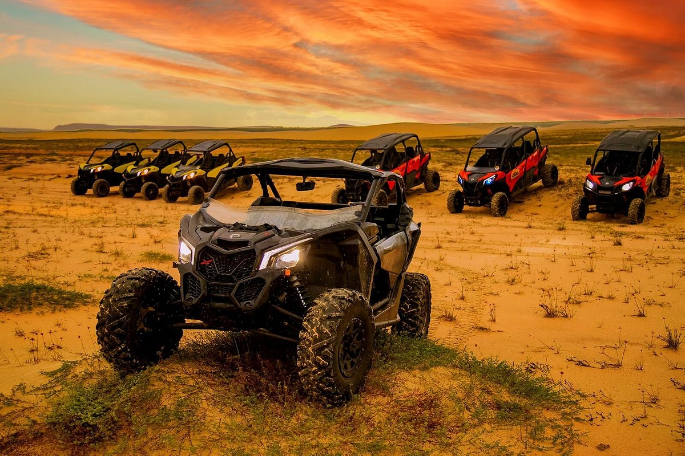
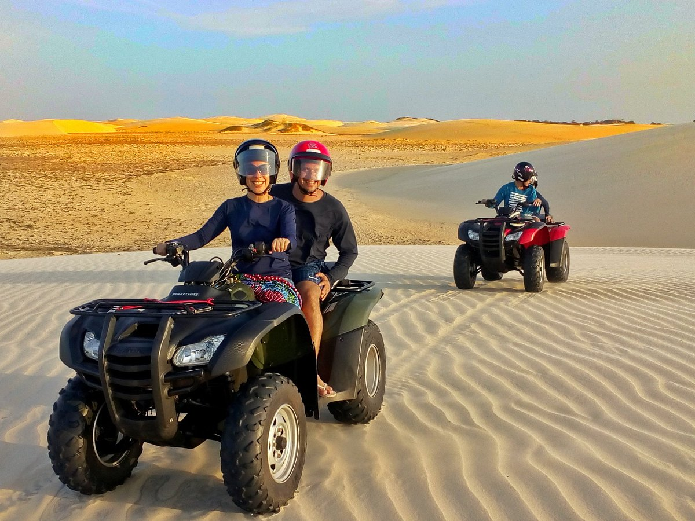

O passeio é feito de jipe Jimny Suzuki. O guia busca vocês no hotel e começa mostrando as Paleodunas do Maramar, Macapá depois Praia Secreta do Carnaubinha, Praia do Coqueiro. Travessia dos Lençóis Piauienses pelas dunas até a Lagoa do Portinho. Parada para almoço (não incluso) Depois pier do Safanelli, Quebra Mar de Amarração, Praia de Atalaia, Itaqui e Árvore Penteada. Com paradas para banhos, fotos e vídeos. Temos seguro acidentes guia experiente e rota exclusiva
Praias & Dunas

R$450,00

travessia dos lençois
R$650,00
Roteiro de dia todo saindo das proximidades da Lagoa do Portinho e indo até a Praia do Itaqui, passando por trilhas, dunas e com várias paradas para fazer fotos e curtir a paisagem.Parada para almoço (não incluso no valor do passeio) a beira da praia e descanso, retorno por caminho similar. Nesse roteiro você vai poder curtir banho de água doce e salgada, sem contar as falésias e o farol na praia de Itaqui que rendem imagens lindas!

Lençóis Noturno
R$350,00
Passeio de Quadriciclo para contemplar as Dunas e Lagoa iluminadas pela Lua. Em um circuito elaborado especialmente para esse fim, você vai se encantar com a beleza do local de uma perspectiva totalmente diferente. Para tornar esse passeio ainda mais especial escolhemos um local privilegiado para um brinde. É necessário reserva.

Trilha Amarração
R$750,00
Roteiro de dia todo com guia, saindo às 8h das proximidades da Lagoa do Portinho com destino a Praia da Carnaubinha retornando às 18h. Esse roteiro passa por trilhas, matas, lagoas, mar e dunas. São 90km no total de muita aventura com direito a visitas a Árvore Penteada, lagoa do sobradinho e muito mais. A parada para almoço (não incluso no valor do passeio) é a beira mar para descanso no Resort Carnaubinha. Retorno pelas Dunas por circuito similar visitando as lagoas dos Lençóis e finalizando com um espetacular pôr do sol.

Adventure PHB
R$800,00
Bem-vindo a Adventure PHB, oferecemos aos clientes uma experiência de Ecoturismo e Aventura única com uma vasta seleção de passeios de Quadriciclos, Utv’s, Motos e 4x4. Venha nos visitar para conferir nosso catálogo e conversar com nossa equipe, sempre amigável e prestativa. Nossos Passeios e Expedições de Quadriciclos, Utv’s, Motos e 4x4 foi fundado com o objetivo de trazer experiências de aventura ao inexplorável Lençóis Piauienses.

Quadri&Aventuras
R$850,00
R$950,00
Um passeio Imperdível! Venha e participe da experiência única de pilotar um Quadriciclo em nossa rota exclusiva. Paisagens exuberantes, praticamente intocadas, com beleza incomparável. Atividade perfeita para preencher uma manhã ou tarde livre em nossa região.